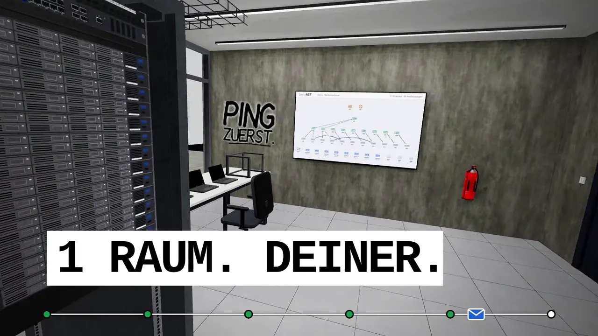
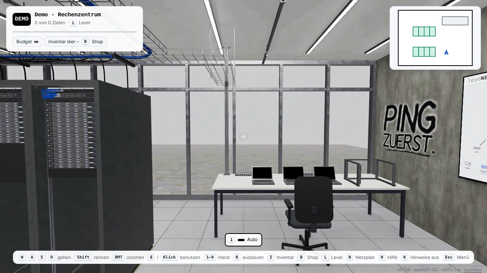
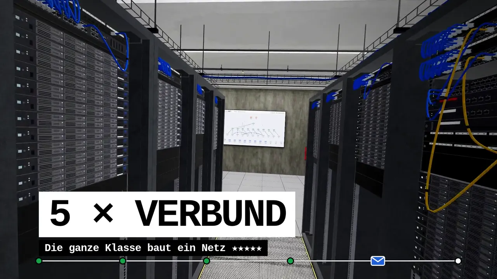
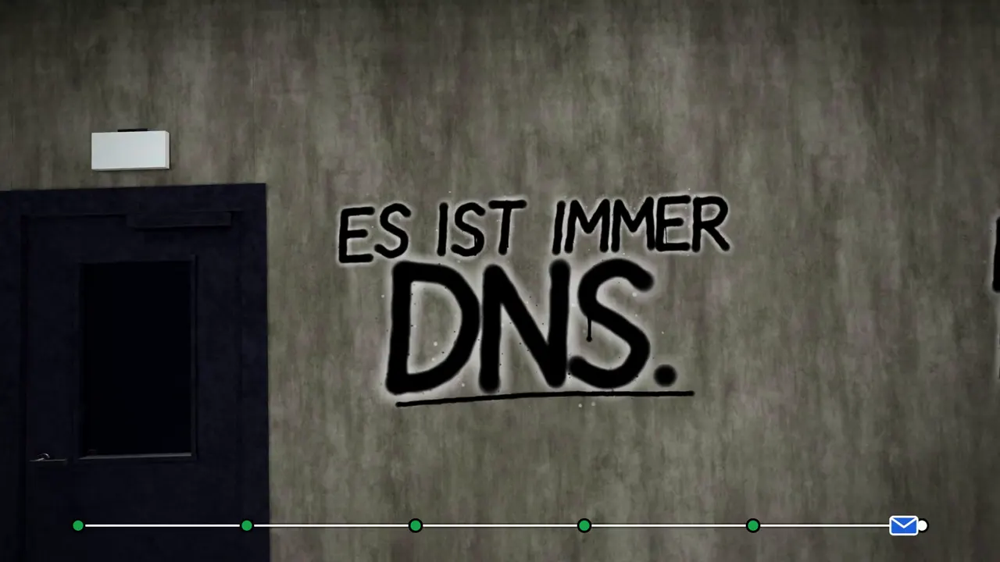
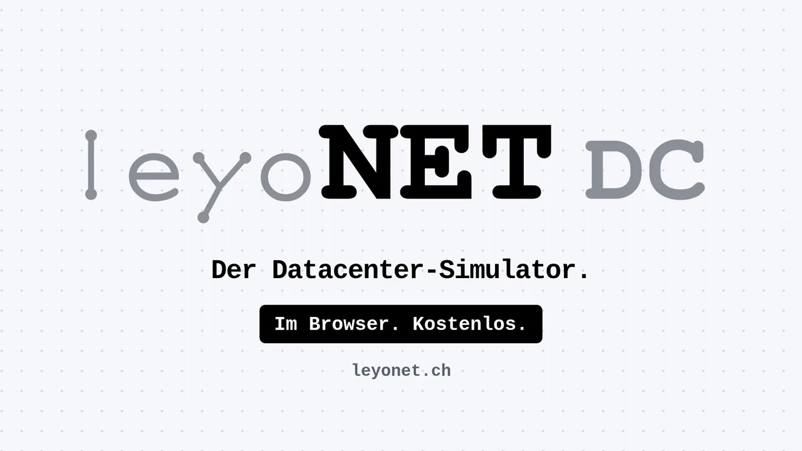

A game
You walk through your server room, shop for hardware, carry devices to the rack and mount them unit by unit. Levels with a budget, goals, a speedrun timer and sayings on the wall every IT person knows.
leyoNET DC is a game and a simulator at once: you build your own datacenter in 3D – buy, install, cable, connect power, configure. Whether your network works is decided by the leyoNET simulation core. Every ping is really computed.
DC stands for datacenter: the room full of servers and network devices that websites, school platforms and chats run on. In leyoNET DC you are standing in it yourself.
You walk through your server room, shop for hardware, carry devices to the rack and mount them unit by unit. Levels with a budget, goals, a speedrun timer and sayings on the wall every IT person knows.
Behind the game runs the same core as in the leyoNET network simulator: addresses, VLANs, routing, NAT, firewall, BGP. The console understands real commands, and the network diagram draws itself from what you have built.
Made for IT apprenticeships: the levels lead from the first cable to the core switch. In the class network the whole class builds one shared network; the teacher sees everything on the dashboard and signs off the sites.
Stills from the film, just as it looks in the game.

An empty room, a budget, a task. Yellow markings show where racks may go.

Set up racks, mount switches, routers, firewalls and patch panels – with a preview showing whether the device fits the rack unit.

Copper, fibre and power: cable in hand, port A, port B. Bundles sag in the cable tray, just like in real life.

On the notebook at the desk or at the console: real commands, real answers. ip route, ping, show.

The network diagram is drawn from your room, also live on the wall screen. A goal only turns green once it really works in the simulation.

Save your game and keep building later. Or restart the level and play against the clock.
Every level starts empty, with a budget and a build plan. If you like, the build is done for you and you only configure.
| Level | Task | Topics |
|---|---|---|
| 1 | Connect two notebooks | Cable, IPv4, ping |
| 2 | Build a rack, patch, uplink | Rack, patch panel, power |
| 3 | Set up a switch on the console | Console, management address, saving |
| 4 | Router: connect two networks | Subnets, gateway, SSH |
| 5 | Firewall: LAN and DMZ | Firewall rules, DMZ |
| 6 | Fibre uplink | SFP, fibre |
| 7 | Core switch: route VLANs | Layer 3, VLAN, SSH |
Plus free building without a budget and a ready-made demo datacenter with 8 racks and over 140 devices (both with an access code).


Every workstation builds its own site with its own addresses and connects it to the provider line. Just like the leyoNET class network.
With keyboard and mouse, like any game. All keys can be remapped in the game; on the iPad there are touch controls (being tested).
leyoNET DC is developed by Mark with the help of AI and builds on the leyoNET core by Mark and Mika.


The game runs on dc.leyonet.ch, free and with nothing to install. If you would like to support leyoNET and leyoNET DC, you can find us on Patreon.